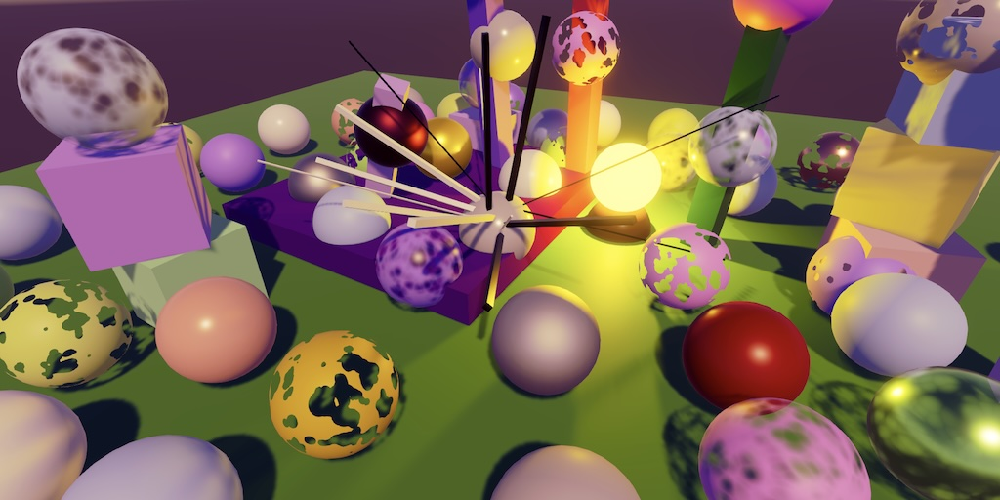

Custom SRP 5.0.0
Unsafe Passes

This tutorial is made with Unity 6000.1.4f1 and follows Custom SRP 4.0.0.
Upgrade to Unity 6.1
Last time we upgraded our project so it works with Unity 6. This time we go a step further and switch to using the new render passes. We also jump to Unity 6.1. That's why we increment our own major version number as well.
After opening the project in Unity 6.1 it will upgrade a few packages and we will encounter a shader compiler error. This is caused by the upgrade of the Core RP Library to version 17.1.0. The UnpackNormalmapRGorA HLSL function has been renamed to avoid a name clash. Map is now capitalized, so make the corresponding change in Common.hlsl.
float3 DecodeNormal(float4 sample, float scale)
{
#if defined(UNITY_NO_DXT5nm)
return normalize(UnpackNormalRGB(sample, scale));
#else
return normalize(UnpackNormalMapRGorAG(sample, scale));
#endif
}
We also get a compiler warning about CustomRenderPipeline overriding an obsolete Render method. This is the old empty method that we left in place because it used to be required. We can now remove it.
//protected override void Render(//ScriptableRenderContext context, Camera[] cameras) {}
As we're in a new major version let's remove our old obsolete renderingLayerMask field from CameraSettings.
[HideInInspector, Obsolete("Use newRenderingLayerMask instead.")]public int renderingLayerMask = -1;
Also remove the code in CameraRenderer.Render that performed the mask conversion.
//#if UNITY_EDITOR//#pragma warning disable 0618//if (cameraSettings.renderingLayerMask != 0) { … }//#pragma warning restore 0618//#endif
Release Build Profiling Bug
It turns out that Unity 6 introduced a bug that causes default profiler samplers to be missing in release builds. This lead to an error when rendering implicit cameras, like for realtime reflection probes. Unity has to fix this, but we can work around it by introducing a static GetDefaultProfileSampler method for a camera in CameraRenderer. For editor or development builds it forwards to ProfilingSampler.Get, otherwise it returns a catch-all sampler for other cameras that we create ourselves.
#if (UNITY_EDITOR || DEVELOPMENT_BUILD)
static ProfilingSampler GetDefaultProfileSampler(Camera camera) =>
ProfilingSampler.Get(camera.cameraType);
#else
static ProfilingSampler defaultReleaseBuildProfilingSampler =
new("Other Camera");
static ProfilingSampler GetDefaultProfileSampler(Camera camera) =>
defaultReleaseBuildProfilingSampler;
#endif
Use this method in Render, replacing the direct invocation of ProfilingSampler.Get.
if (camera.TryGetComponent(out CustomRenderPipelineCamera crpCamera))
{
cameraSampler = crpCamera.Sampler;
cameraSettings = crpCamera.Settings;
}
else
{
cameraSampler = GetDefaultProfileSampler(camera);
cameraSettings = defaultCameraSettings;
}
Unsafe Passes
At this point everything still works as it should in Unity 6.1, but we're relying on old Render Graph API methods that will be removed at some point. Specifically, we're creating generic render passes using RenderGraph.AddRenderPass. These are unrestricted passes that allow us to do anything, but the newer API adds limitations to passes so it can be scheduled and optimized better. Specifically, there is currently the distinction between raster, compute, and unsafe passes. The unsafe passes are the least restricted, so for our initial conversion we will simple turn all our passes into unsafe ones. While this doesn't sound like much of a change it does force us to use the newer API structure. For the most part the conversion will be straightforward, but there are a few places were we have to deal with some new restrictions.
Skybox Pass
Let's begin with SkyboxPass, which is one of the simplest passes. To turn it into an unsafe pass we have to replace the invocation of AddRenderPass in Record with AddUnsafePass.
using RenderGraphBuilder builder = renderGraph.AddUnsafePass( sampler.name, out SkyboxPass pass, sampler);
Now we no longer get a generic RenderGraphBuilder, but instead one specific for unsafe passes. The method's return type isn't a specific class but an interface, in this case IUnsafeRenderGraphBuilder. It might be inconvenient to explicitly name this type, but I do so for clarity's sake instead of using var.
using IUnsafeRenderGraphBuilder builder = renderGraph.AddUnsafePass( sampler.name, out SkyboxPass pass, sampler);
The new builder forces us to change our approach a little. We used to invoke create methods on the render graph, pass their return value to the builder's usage method, and assign the result of that to the pass data. This no longer works because the builder's usage methods no longer return their argument. So we have to turn such code into two separate statements.
//pass.list = builder.UseRendererList(//renderGraph.CreateSkyboxRendererList(camera));pass.list = renderGraph.CreateSkyboxRendererList(camera); builder.UseRendererList(pass.list);
Also, the read, write, and readwrite methods have been consolidated into a single use method. So we have to replace ReadWriteTexture and ReadTexture with UseTexture.
//builder.ReadWriteTexture(textures.colorAttachment);//builder.ReadTexture(textures.depthAttachment);builder.UseTexture(textures.colorAttachment); builder.UseTexture(textures.depthAttachment);
By default usage is read-only and other access types can be specified by adding an AccessFlags argument. So for the color attachment we add AccessFlags.ReadWrite.
builder.UseTexture(textures.colorAttachment, AccessFlags.ReadWrite);
Our Render method will now be passed a more restricted UnsafeGraphContext.
void Render(UnsafeGraphContext context) { … }
A big change of this new approach is that we no longer have to execute and clear the command buffer ourselves, which simplifies the code. The only thing left for us to do is add the command for drawing the renderer list.
void Render(UnsafeGraphContext context)
{
context.cmd.DrawRendererList(list);
//context.renderContext.ExecuteCommandBuffer(context.cmd);
//context.cmd.Clear();
}
In fact, we can no longer execute command buffers ourselves at all. This is now entirely managed by the render graph.
Geometry Pass
Let's convert GeometryPass next. Its Render method requires the same changes, making it exactly the same as for the skybox, just a single DrawRendererList invocation. So I won't explicitly show it. Adjust Record similarly as well. If we initially ignore the buffer usages, it's just more of the same.
using IUnsafeRenderGraphBuilder builder = renderGraph.AddUnsafePass( sampler.name, out GeometryPass pass, sampler);//pass.list = builder.UseRendererList(renderGraph.CreateRendererList(pass.list = renderGraph.CreateRendererList( new RendererListDesc(shaderTagIDs, cullingResults, camera) { … });//);builder.UseRendererList(pass.list); builder.UseTexture(textures.depthAttachment, AccessFlags.ReadWrite); builder.UseTexture(textures.colorAttachment, AccessFlags.ReadWrite); if (!opaque) { if (textures.colorCopy.IsValid()) { builder.UseTexture(textures.colorCopy); } if (textures.depthCopy.IsValid()) { builder.UseTexture(textures.depthCopy); } } … builder.UseTexture(lightData.shadowResources.directionalAtlas); builder.UseTexture(lightData.shadowResources.otherAtlas);
The usage of the buffers requires similar changes as for textures. Although the UseBuffer method still does return the buffer, this is not intended and it will become a void method in the future to match the other usage methods.
builder.UseBuffer(lightData.directionalLightDataBuffer); builder.UseBuffer(lightData.otherLightDataBuffer); builder.UseBuffer(lightData.tilesBuffer); builder.UseTexture(lightData.shadowResources.directionalAtlas); builder.UseTexture(lightData.shadowResources.otherAtlas); builder.UseBuffer( lightData.shadowResources.directionalShadowCascadesBuffer); builder.UseBuffer( lightData.shadowResources.directionalShadowMatricesBuffer); builder.UseBuffer(lightData.shadowResources.otherShadowDataBuffer);
Unsupported Shaders Pass
Make the same changes to UnsupportedShadersPass. While we're at it, add texture usage indicators for it as well, which we had omitted until now. I only show the changes for that.
public static void Record(
RenderGraph renderGraph,
Camera camera,
CullingResults cullingResults,
in CameraRendererTextures textures)
{
…
builder.UseRendererList(pass.list);
builder.UseTexture(textures.colorAttachment, AccessFlags.ReadWrite);
builder.UseTexture(textures.depthAttachment, AccessFlags.ReadWrite);
…
}
This requires us to pass the textures when recording it in CameraRenderer.Render.
UnsupportedShadersPass.Record( renderGraph, camera, cullingResults, textures);
Debug Pass
Upgrade DebugPass in the same way. As the rendering work is done by CameraDebugger.Render We also have to make changes to that method, changing its context parameter type. Also, each context now has its own buffer type, in this case UnsafeCommandBuffer. This limits what kind of commands we can issue, though the unsafe context is the least restricted.
public static void Render(UnsafeGraphContext context)
{
UnsafeCommandBuffer buffer = context.cmd;
buffer.SetGlobalFloat(opacityID, opacity);
buffer.DrawProcedural(
Matrix4x4.identity, material, 0, MeshTopology.Triangles, 3);
//context.renderContext.ExecuteCommandBuffer(buffer);
//buffer.Clear();
}
Setup Pass
Adapt SetupPass.Record as expected. In this case we use AccessFlags.WriteAll for the attachments. This indicates that we're going to fully write the contents of the textures and don't need their original data to be loaded.
using IUnsafeRenderGraphBuilder builder = renderGraph.AddUnsafePass( sampler.name, out SetupPass pass, sampler); … TextureHandle colorAttachment = pass.colorAttachment =//builder.WriteTexture(renderGraph.CreateTexture(desc));renderGraph.CreateTexture(desc); builder.UseTexture(colorAttachment, AccessFlags.WriteAll); … TextureHandle depthAttachment = pass.depthAttachment =//builder.WriteTexture(renderGraph.CreateTexture(desc));renderGraph.CreateTexture(desc); builder.UseTexture(depthAttachment, AccessFlags.WriteAll);
The unsafe context doesn't expose the render context, so we can no longer invoke SetupCameraProperties on it in Render. We now invoke it on the command buffer instead.
void Render(UnsafeGraphContext context)
{
//context.renderContext.SetupCameraProperties(camera);
UnsafeCommandBuffer cmd = context.cmd;
cmd.SetupCameraProperties(camera);
…
//context.renderContext.ExecuteCommandBuffer(cmd);
//cmd.Clear();
}
Post FX Pass
Moving on to the post-FX stack, the changes to PostFXPass.Record are as expected.
using IUnsafeRenderGraphBuilder builder = renderGraph.AddUnsafePass( finalSampler.name, out PostFXPass pass, finalSampler); pass.keepAlpha = keepAlpha; pass.stack = stack;//pass.colorSource = builder.ReadTexture(colorSource);pass.colorSource = colorSource; builder.UseTexture(colorSource); builder.UseTexture(colorLUT);
We're now passing an unsafe command buffer around and from now on we're going to work with TextureHandle exclusively when referencing textures, replacing RenderTargetIdentifier.
void ConfigureFXAA(UnsafeCommandBuffer buffer) { … }
void Render(UnsafeGraphContext context)
{
UnsafeCommandBuffer buffer = context.cmd;
buffer.SetGlobalFloat(finalSrcBlendId, 1f);
buffer.SetGlobalFloat(finalDstBlendId, 0f);
TextureHandle finalSource;
…
//context.renderContext.ExecuteCommandBuffer(buffer);
//buffer.Clear();
}
Adjust PostFXStack to also work with UnsafeCommandBuffer and TextureHandle. This requires us to import the UnityEngine.Rendering.RenderGraphModule namespace there.
Update ColorLUTPass to match. As we're fully generating the LUT texture use AccessFlags.WriteAll for it in Record.
using IUnsafeRenderGraphBuilder builder = renderGraph.AddUnsafePass( sampler.name, out ColorLUTPass pass, sampler); …//pass.colorLUT = builder.WriteTexture(renderGraph.CreateTexture(desc));pass.colorLUT = renderGraph.CreateTexture(desc); builder.UseTexture(pass.colorLUT, AccessFlags.WriteAll);
The same goes for BloomPass, using AccessFlags.WriteAll for the bloomResult texture.
Lighting Pass
LightingPass needs a bit more work. We Begin with Record, making the usual changes.
using IUnsafeRenderGraphBuilder builder = renderGraph.AddUnsafePass( sampler.name, out LightingPass pass, sampler); pass.Setup(cullingResults, attachmentSize, forwardPlusSettings, shadowSettings, renderingLayerMask);//pass.directionalLightDataBuffer = builder.WriteBuffer(pass.directionalLightDataBuffer = renderGraph.CreateBuffer( new BufferDesc( maxDirectionalLightCount, DirectionalLightData.stride) { name = "Directional Light Data" });//);builder.UseBuffer( pass.directionalLightDataBuffer, AccessFlags.WriteAll);//pass.otherLightDataBuffer = builder.WriteBuffer(pass.otherLightDataBuffer = renderGraph.CreateBuffer(new BufferDesc( maxOtherLightCount, OtherLightData.stride) { name = "Other Light Data" });//);builder.UseBuffer(pass.otherLightDataBuffer, AccessFlags.WriteAll);//pass.tilesBuffer = builder.WriteBuffer(pass.tilesBuffer = renderGraph.CreateBuffer(new BufferDesc( pass.TileCount * pass.maxTileDataSize, 4 ) { name = "Forward+ Tiles" });//);builder.UseBuffer(pass.tilesBuffer, AccessFlags.WriteAll);
Then adapt Render as expected. From now on we'll pass the command buffer to shadows.Render directly. Also, we should no longer immediately dispose the tile data. We shouldn't do this because we do not control when the buffer gets executed and we have to ensure that the tile data remains valid until after it has been copied.
void Render(UnsafeGraphContext context)
{
UnsafeCommandBuffer buffer = context.cmd;
…
shadows.Render(context.cmd);
…
// context.renderContext.ExecuteCommandBuffer(buffer);
// buffer.Clear();
lightBounds.Dispose();
// tileData.Dispose();
}
To keep this working we'll keep the tile data until we're sure that it is no longer needed. First, we make its field static.
static NativeArray<int> tileData;
Second, in SetupLights we no longer create a temporary array. We instead check whether the array doesn't exist yet or if its length is incorrect. If so, dispose the array if it exists, then create a new persistent array with the correct length.
//tileData = new NativeArray<int>(//TileCount * tileDataSize, Allocator.TempJob);int tileDataLength = TileCount * tileDataSize; if (!tileData.IsCreated || tileData.Length != tileDataLength) { if (tileData.IsCreated) { tileData.Dispose(); } tileData = new(tileDataLength, Allocator.Persistent, NativeArrayOptions.UninitializedMemory); }
This does mean that the tile data will stick around after the last frame gets rendered, so we have to clean it up. Add a public static Cleanup method that disposes it.
public static void Cleanup() => tileData.Dispose();
Invoke it in CameraRenderer.Dispose.
public void Dispose()
{
CoreUtils.Destroy(material);
CameraDebugger.Cleanup();
LightingPass.Cleanup();
}
Next, adjust Shadows so it works with UnsafeCommandBuffer and IUnsafeRenderGraphBuilder. Its Render method now directly accepts the command buffer, skipping the context.
public void Render(UnsafeCommandBuffer buffer)
{
// buffer = context.cmd;
this.buffer = buffer;
…
//context.renderContext.ExecuteCommandBuffer(buffer);
//buffer.Clear();
}
Change the usage of renderer lists and textures as needed. This requires a little more verbose code in GetResources because we can no longer do everything in a single statement.
//directionalAtlas = shadowedDirLightCount > 0 ?//builder.WriteTexture(renderGraph.CreateTexture(desc)) ://renderGraph.defaultResources.defaultShadowTexture;if (shadowedDirLightCount > 0) { directionalAtlas = renderGraph.CreateTexture(desc); builder.UseTexture(directionalAtlas, AccessFlags.WriteAll); } else { directionalAtlas = renderGraph.defaultResources.defaultShadowTexture; } …//otherAtlas = shadowedOtherLightCount > 0 ?//builder.WriteTexture(renderGraph.CreateTexture(desc)) ://renderGraph.defaultResources.defaultShadowTexture;if (shadowedOtherLightCount > 0) { otherAtlas = renderGraph.CreateTexture(desc); builder.UseTexture(otherAtlas, AccessFlags.WriteAll); } else { otherAtlas = renderGraph.defaultResources.defaultShadowTexture; }
Copy Attachments Pass
Change CopyAttachmentsPass as usual. In CameraRendererCopier, change its method parameters to UnsafeCommandBuffer and TextureHandle. This will reveal to us that we can no longer use CopyTexture. From now on we have to rely on the CopyByDrawing approach. While this might be less than ideal, we could optimize this a bit but will leave that for the future. It does simplify our copier.
Remove copyTextureSupported, RequiresRenderTargetResetAfterCopy, and the Copy method. Then rename CopyByDrawing to Copy and adjust its parameter types.
//static readonly bool copyTextureSupported =//SystemInfo.copyTextureSupport > CopyTextureSupport.None;//public static bool RequiresRenderTargetResetAfterCopy =>//!copyTextureSupported;…//public readonly void Copy(…) { … }//public readonly void CopyByDrawing(public readonly void Copy( UnsafeCommandBuffer buffer, TextureHandle from, TextureHandle to, bool isDepth) { … }
From now on we have to ensure that the source and destination blend shader properties are always set correctly in Copy, otherwise drawing will fail.
buffer.SetGlobalFloat(srcBlendID, 1f); buffer.SetGlobalFloat(dstBlendID, 0f); buffer.SetGlobalTexture(sourceTextureID, from);
And we now have to always reset the render target in CopyAttachmentsPass.Render
//if (CameraRendererCopier.RequiresRenderTargetResetAfterCopy)//{buffer.SetRenderTarget( colorAttachment, RenderBufferLoadAction.Load, RenderBufferStoreAction.Store, depthAttachment, RenderBufferLoadAction.Load, RenderBufferStoreAction.Store );//}
Gizmos Pass
Next up is GizmosPass. From now on we also have to use renderer lists for this pass. This requires us to add fields for the renderer lists. Also, we now have to use a texture handle for the camera target, so add a field for it.
TextureHandle depthAttachment, cameraTarget; RendererListHandle preList, postList;
Make Record set everything up using the new approach. We need to read from the depth attachment and can create the gizmos renderer lists via RenderGraph.CreateGizmoRendererList. We can get a texture handle for the camera target via RenderGraph.ImportBackbuffer, passing it BuiltinRenderTextureType.CameraTarget. Also, like for the skybox pass we have to disable pass culling because these renderer lists are considered empty for pass culling.
using IUnsafeRenderGraphBuilder builder = renderGraph.AddUnsafePass( sampler.name, out GizmosPass pass, sampler); pass.copier = copier;//pass.depthAttachment = builder.ReadTexture(//textures.depthAttachment);pass.depthAttachment = textures.depthAttachment; builder.UseTexture(pass.depthAttachment); pass.preList = renderGraph.CreateGizmoRendererList( copier.Camera€, GizmoSubset.PreImageEffects); builder.UseRendererList(pass.preList); pass.postList = renderGraph.CreateGizmoRendererList( copier.Camera€, GizmoSubset.PostImageEffects); builder.UseRendererList(pass.postList); pass.cameraTarget = renderGraph.ImportBackbuffer( BuiltinRenderTextureType.CameraTarget); builder.UseTexture(pass.cameraTarget, AccessFlags.WriteAll); builder.AllowPassCulling(false); builder.SetRenderFunc<GizmosPass>( static (pass, context) => pass.Render(context));
In Render we now have to perform the depth copy and draw the renderer lists.
void Render(UnsafeGraphContext context)
{
UnsafeCommandBuffer buffer = context.cmd;
//ScriptableRenderContext renderContext = context.renderContext;
copier.Copy(buffer, depthAttachment, cameraTarget, true);
//renderContext.ExecuteCommandBuffer(buffer);
//buffer.Clear();
//renderContext.DrawGizmos(copier.Camera, GizmoSubset.PreImageEffects);
//renderContext.DrawGizmos(copier.Camera, GizmoSubset.PostImageEffects);
buffer.DrawRendererList(preList);
buffer.DrawRendererList(postList);
}
Final Pass
The last pass to change is FinalPass. This is another straightforward upgrade. The parameter types of CameraRendererCopier.CopyToCameraTarget also have to change. To keep things simple we'll still rely on BuiltinRenderTextureType.CameraTarget in that method.
We have now migrated our render pipeline to the newer Render Graph API so it won't fail when the old methods get removed. We will start to specialize our passes in the next tutorial, which is Custom SRP 5.1.0.